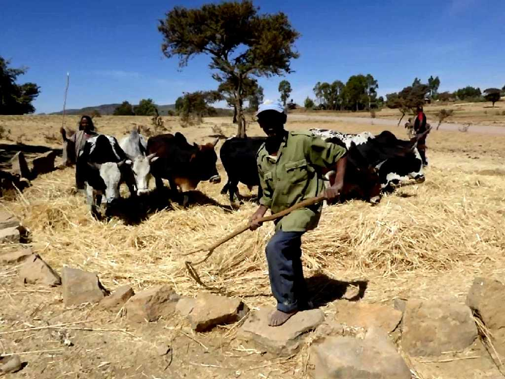
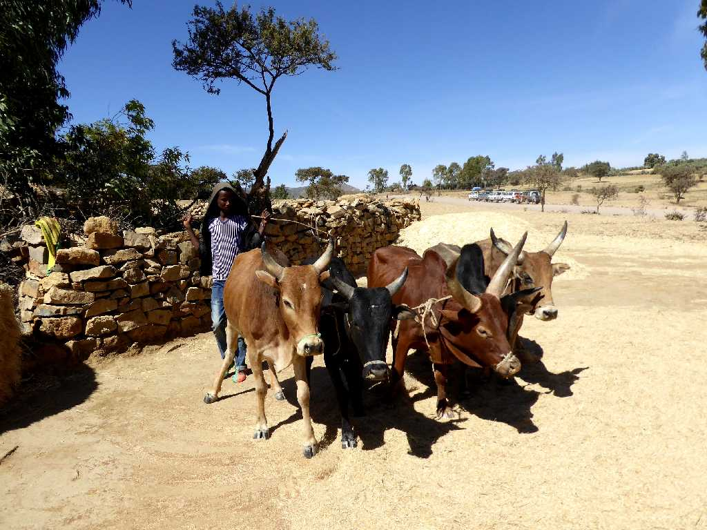
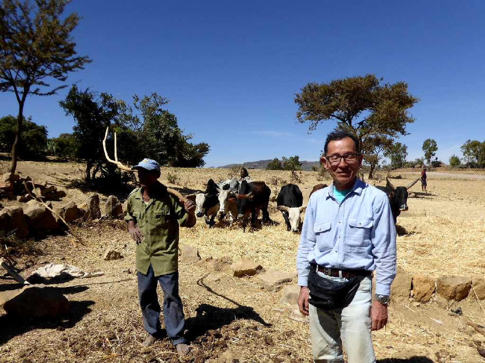
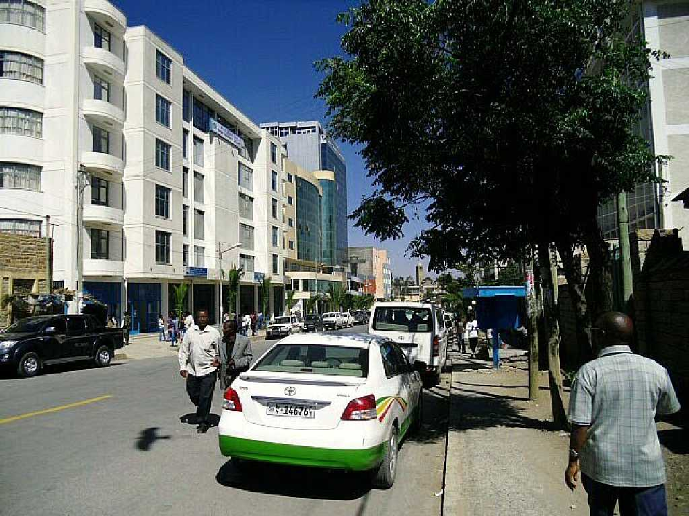
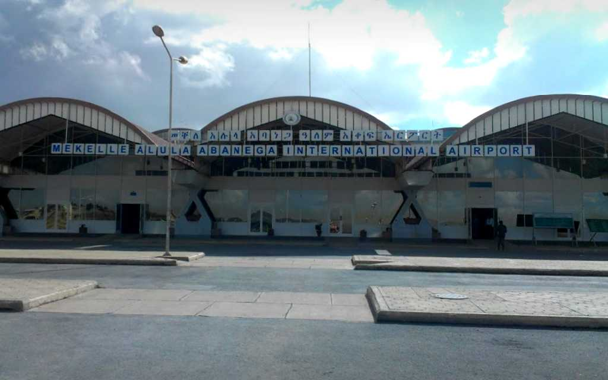

Farmer near Mekelle
牛で脱穀するメケレ近くの農家を訪ねる
Farmhouse near Mekelle

Farm Field near Mekelle

January 20 2017 Farmer near Mekelle

Mekelle

Airport Mekelle
ジブチからエチオピア北部のここメケレまでアフリカ大地溝帯最深部のアファールトライアングルを四輪駆動車で約１,８００ｋｍ走る旅が終わる